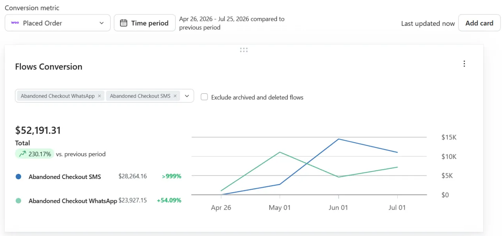
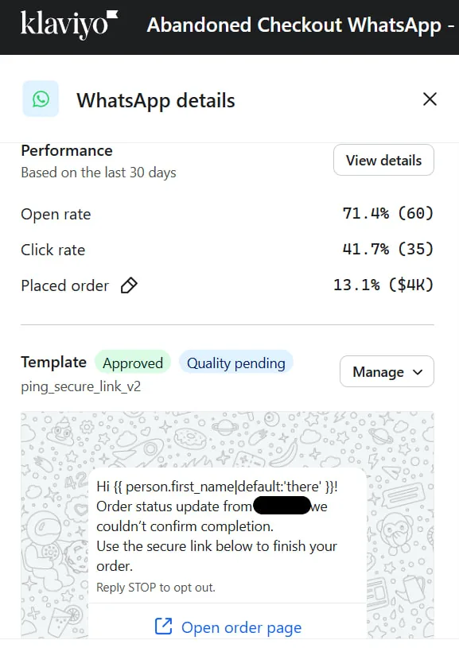
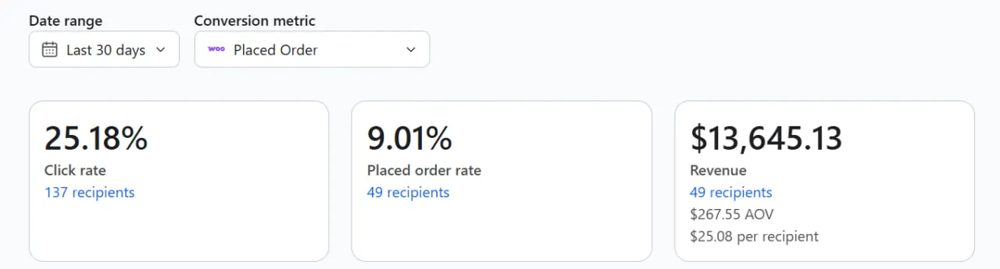
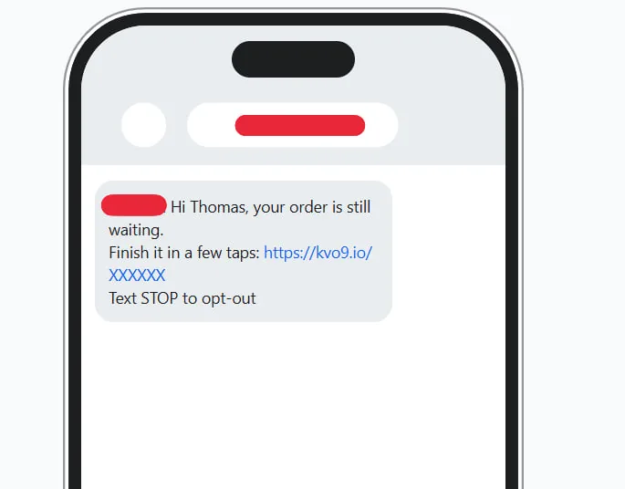
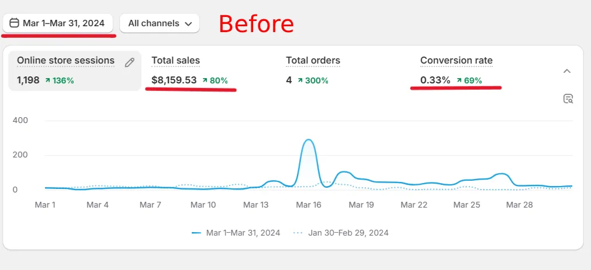
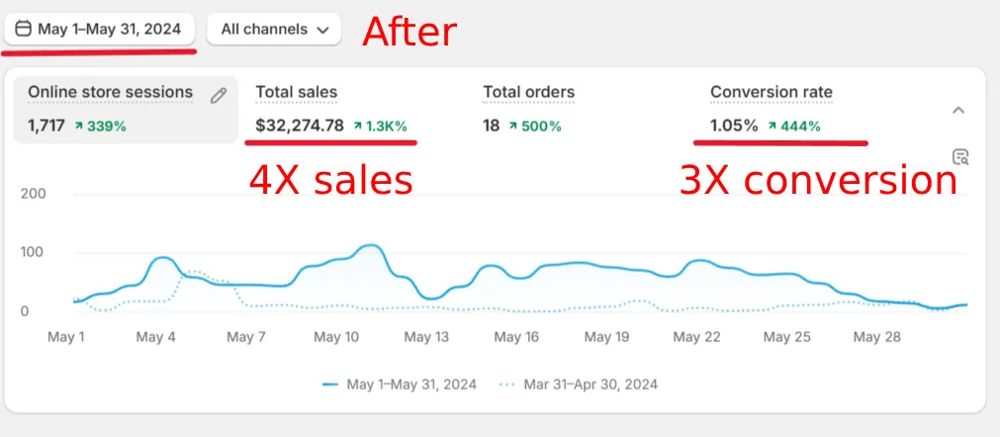

- 71.4% открыли
- 41.7% перешли
- 13.1% оформили заказ
Возврат брошенных корзин — Telegram · SMS · WhatsApp
Ваш магазин уже нашёл покупателей.
Большинство уходит на чекауте.
Я возвращаю их.
Я собираю цепочки сообщений в Telegram, SMS и WhatsApp, которые вернули $50,000+ за 90 дней одному магазину — без дополнительного рекламного бюджета, без раздачи скидок и без созвонов. Пришлите ссылку на ваш магазин — покажу, сколько денег вы сейчас теряете.
Прислать ссылку на магазин
Вы получите короткий персональный видео-аудит магазина. Бесплатно. Без единого созвона.
$50,000+
Текст отзыва.
Имя клиентаДолжность, компания
Вы и сами знаете эту цифру.
Она прямо сейчас в вашей аналитике: корзины созданы, чекаут начат, заказы оплачены. Разница между последними двумя — деньги, которые были в одном клике от вашего счёта.
Вы наверняка что-то пробовали. Email-цепочку, которая попадает в «Промоакции» и остается там. Поп-ап со скидкой, который приучает клиентов бросать корзину специально. Сервис «возврата корзин» по подписке, который хочет плату за каждое сообщение и процент с выручки, которую сам же себе щедро приписывает.
А самые горячие покупатели, которых когда-либо приводила ваша реклама — те, кто уже ввёл адрес доставки, — молча уходят.
Эту дыру я и закрываю.
Как один магазин забрал $52,191, которые почти потерял
Клиент: Meamo — корейский бьюти-бренд с продажами по всему миру. Публикуется с разрешения.
Что было. Бросившие чекаут получали то, что шлют почти все магазины: одно письмо, через несколько часов, в переполненный ящик. Самые горячие покупатели — почти нулевой возврат.
Что я внедрил. Цепочки SMS и WhatsApp на базе Klaviyo: 2–3 коротких сообщения на каждого бросившего, тайминг под уровень интента, в каждом — защищённая ссылка прямо в его заказ. Согласованные шаблоны, чистый opt-out, всё в рамках правил каналов. Без агентства и созвонов — собрал асинхронно и включил.
Итог — 90 дней
$52,191
возвращено
$28,264
SMS
$23,927
SMS
- 25.2% перешли
- 9.0% оформили заказ
- ~$25 возврата на получателя при среднем чеке $267
Измерение: атрибуция Klaviyo по оформленным заказам, только выручка цепочек.
Почему несколько каналов?
Аудитории разные. В этом магазине SMS обошёл WhatsApp — его и масштабировал. Я веду каналы параллельно, замеряю каждый отдельно и лью объём туда, где ваши клиенты реально отвечают. Я продаю возвращённую выручку, а не избранный мессенджер. Для аудитории, которая живёт в Telegram, в связку встаёт Telegram-бот — как это работает, показываю ниже.




Три шага. Ноль созвонов.
-
Пришлите ссылку на магазин.
В Telegram. Это всё, что нужно для старта — без доступов к аналитике, без брифов, без созвона-знакомства.
-
Я делаю заказ в вашем магазине. И бросаю корзину.
А дальше записываю, что магазин с этим делает. Обычно: ничего — или одно запоздалое письмо. В течение 2 рабочих дней вы получаете короткое персональное видео: тест с брошенной корзиной, трение, которое я нашёл в карточках товара и чекауте, и честная математика — сколько магазин вашего масштаба теряет на этом каждый месяц. Если воронка у вас хорошо настроена — так и скажу и не буду тратить ваше время.
-
Захотите закрыть дыру — закроем.
Цепочки спроектированы, собраны и запущены за 7–10 дней. Всё асинхронно: вы согласовываете сообщением, я выкатываю. Цена — фикс за проект. Возможное помесячное сопровождение — обсудим после успешного запуска.
Возврат корзин ловит тех, кто почти оплатил. Это — про тех, кто до корзины не дошёл.
Конверсия 0.33% 1.05% за 60 дней. Продажи ×4.
Узконишевый Shopify-магазин, сильно недооптимизированный — идеальная демонстрация. Точечные изменения в карточках товара и чекауте: убрать трение, ускорить, поставить реальное преимущество магазина туда, куда смотрит посетитель. Без «редизайна ради редизайна» и подписок на A/B-сервисы. Через шестьдесят дней конверсия утроилась.
Прямым текстом: магазин маленький, поэтому абсолютные цифры маленькие — 4 заказа стали 18 за месяц. Я показываю конверсию, потому что этой метрике всё равно, какого размера магазин. Утроить её — значит одно и то же при 1,000 сессий и при 1,000,000: каждая доля процента конверсии — чистая маржа с трафика, за который вы уже заплатили.


Эти же принципы зашиты в каждый магазин, который я собираю, — поэтому следующий раздел не про обычную веб-разработку.
Магазины, в которых оптимизация уже внутри
Обычно разработчик собирает вам сайт, а потом кто-то вроде меня получает деньги за то, чтобы починить его конверсию. Я убираю лишний шаг: в каждом магазине и лендинге, который я сдаю, CRO-оптимизация — скорость, трение на чекауте, мобильный сценарий покупки, попадание оффера в аудиторию — зашита с первой версии.
Shopify
Wisdomining
Оборудование и комплектующие для майнинга. Магазин + ремонт в одной воронке.
Смотреть ShopifyAichun Beauty
Бьюти-бренд. Минимализм и структура, заточенная под конверсию.
Смотреть ShopifyRabinkov Electric Supply
Электрооборудование. Большой каталог, быстрый путь до заявки.
Смотреть WebflowSwish Oral Care
Стоматология. Чистый дизайн поверх продающей структуры.
СмотретьTelegram-боты для магазинов
Для аудитории, которая живёт в Telegram, я собираю ботов, которые продают и возвращают: каталог, корзина и возврат брошенных корзин — прямо в мессенджере, без ухода на сайт. Мой бот возврата приводит обратно 10–30% брошенных корзин.
Как работает возврат брошенных корзин через Telegram
Кастомный бот магазина: каталог, корзина, заказ
Ещё в арсенале
AI-агенты и автоматизация поддержки.
Self-hosted хелпдеск (Chatwoot) с AI-агентом на первой линии — эффективность поддержки и удержание лидов выросли на 135%, без оплаты «за оператора» и лимитов на обращения. Работает в проде.
Кастомные плагины WooCommerce.
Плагины под задачи конкретного магазина с большим оборотом — включая помощник при ошибках оплаты, который превращает упавшие транзакции в оформленные заказы. Протестированы, приняты штатными разработчиками клиента, работают в проде.
Если это помогает магазину продавать больше или работать дешевле — скорее всего, это ко мне. Спрашивайте.
С кем вы будете работать
Я Артём Матвеев. Я чиню выручку e-commerce: возврат брошенных корзин, конверсию и сами магазины.
- 7+ лет в росте e-commerce — оптимизация конверсии, продающий копирайтинг и автоматизации в одной голове. В агентствах это три разных человека — на стыках между ними результат и теряется.
- Рабочие платформы: Shopify, WooCommerce, WordPress, Webflow · Klaviyo, WhatsApp и Telegram API, Chatwoot · Google Analytics, Hotjar.
- Начинал с продающего копирайтинга (200+ проектов) и только потом ушёл в техническую часть — поэтому мои страницы и сообщения продают, а не просто работают.
- Языки: русский, английский (C2), немецкий (B2) — веду проекты и на западных рынках.
Как я работаю: полностью асинхронно. Вы пишете — я выкатываю, результат видите в собственных дашбордах. Без созвонов, без еженедельных статусов, без счетов за встречи.
Текст отзыва.
Имя клиентаДолжность, компания
Узнайте, сколько денег теряет ваш магазин
Пришлите ссылку на магазин. В течение 2 рабочих дней вы получите короткое персональное видео: что произошло, когда я бросил корзину у вас, где течёт и сколько стоит это закрыть. Бесплатно, асинхронно, без созвонов.
«Однострочный отзыв.» Имя клиента, компания